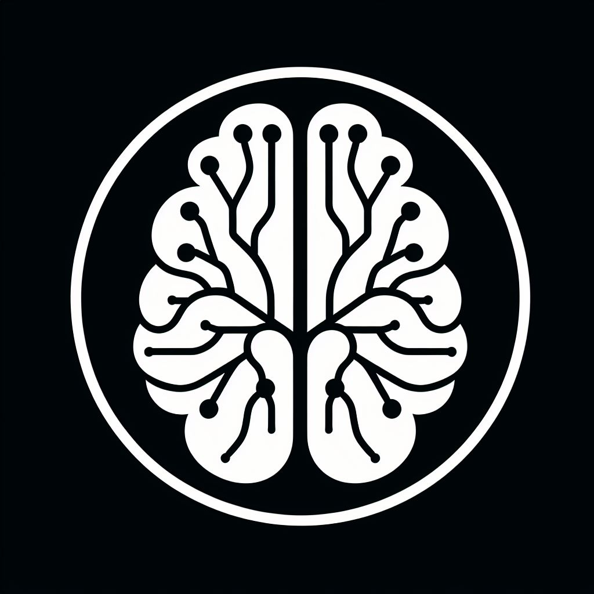
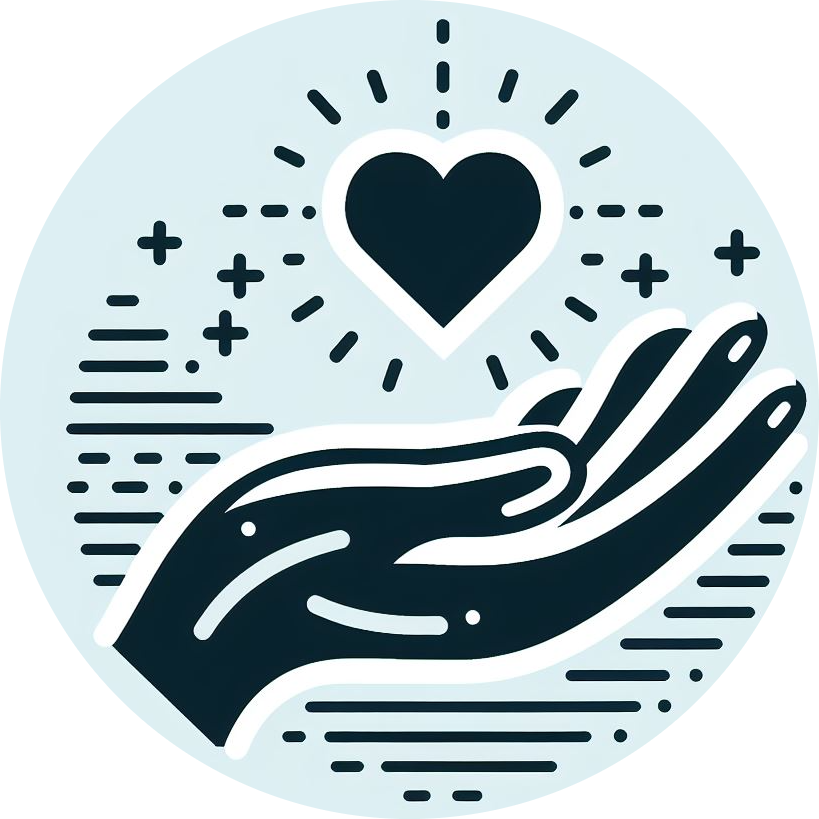

.png)
La Fundación ACEN es una organización sin fines de lucro enfocada en favorecer el conocimiento, la prevención y el tratamiento de enfermedades neuropsiquiátricas, lo cual es llevado a cabo mediante el financiamiento de proyectos de investigación, y difundiendo a la sociedad conocimiento relacionado con estas patologías.
Creemos que es fundamental mejorar la calidad de vidas de las personas con patologías mentales y de sus familias, y favorecer de manera significativa el desarrollo pleno de estas personas. Para esto, es necesario educar a la sociedad de manera adecuada y apoyar el desarrollo científico y tecnológico de la investigación asociada a las patologías siquiátricas y neurológicas.
Creemos que es fundamental mejorar la calidad de vidas de las personas con patologías mentales y de sus familias, y favorecer de manera significativa el desarrollo pleno de estas personas. Para esto, es necesario educar a la sociedad de manera adecuada y apoyar el desarrollo científico y tecnológico de la investigación asociada a las patologías siquiátricas y neurológicas.
A través de tu aporte voluntario, estaras financiando directamente distintas iniciativas que conduciran al avance e innovacion en investigación de las enfermedades neuropsiquiatricas. De esta manera, a través de nosotros estaras participando de una construccion de una sociedad mas equitativa e inclusiva en cuanto a la salud mental.
